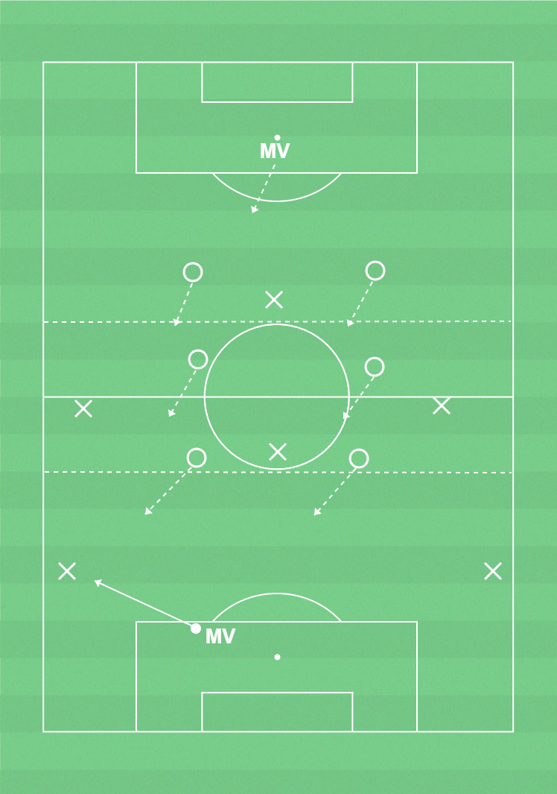

 ▶
▶
Förhindra speluppbyggnad
Förhindra speluppbyggand:- Närmaste pressar.- Styr pressen åt ett håll och flytta över laget.
Målvakter (förhindra speluppbyggnad):- Kommunicera med försvarsspelarna om press och överflyttning.
Speluppbyggnad:- Spelbarhet, leta efter fria ytor och flytta bollen i första tillslaget.
- Hur kan samarbetet i en lagdel gå till? (närmaste spelare pressar bollhållaren - de andra spelarna i lagdelen täcker ytor eller markerar motståndare)- Hur kan laget hållas kompakt? (genom att alla lagdelar (inkl. MV flyttar upp och ned beroende på var bollen är - sträva efter att ha alla spelare (ink. MV inom 2 av planens 1/3)
14 spelare, yta 50-55x30-35m (7 mot 7 plan), bollar, 2 färger västar, 2 mål
Spel med 7 mot 7 regler.
Det är bra att i träning variera spelet mellan att spela 7 mot 7 på matchplan med att spela med färre antal spelare och en mindre yta. Det gör att antalet fotbollsaktioner med boll per spelare ökar.